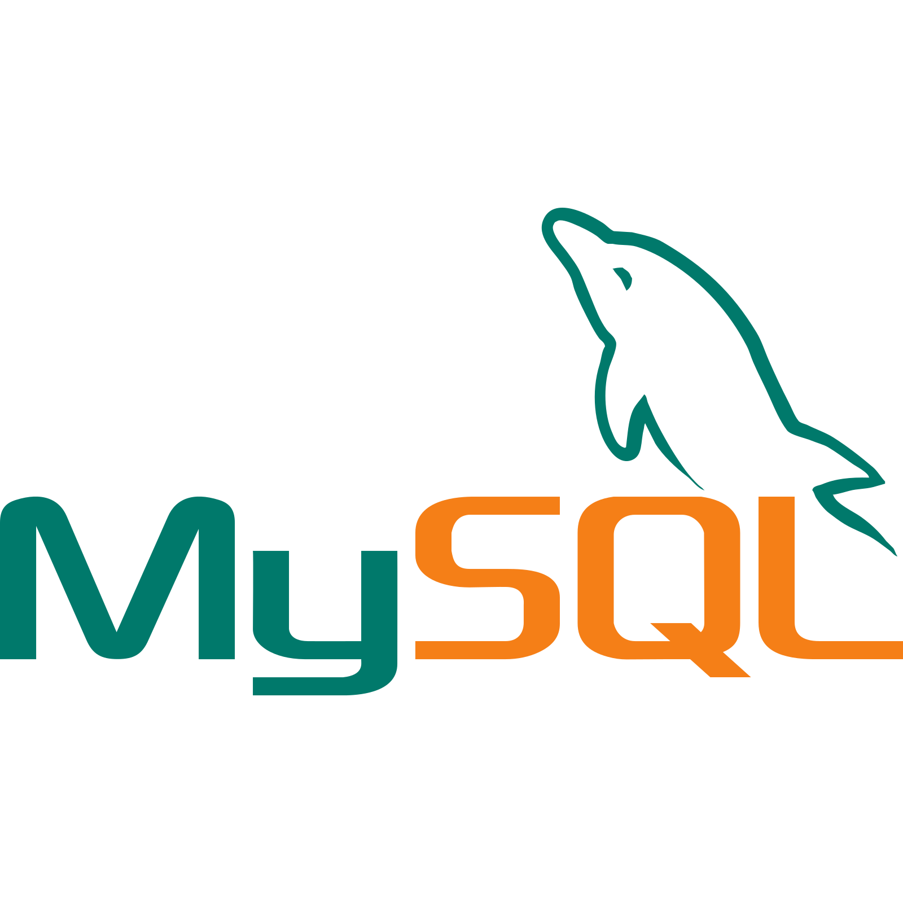

A passionate developer, problem solver, and lifelong learner. I specialize in Data Science, including Machine Learning, Data Analysis, and Web Development.
I'm a B.Tech graduate with a passion for Data Science and Web Development. My journey into Data Science has been fueled by my interest in Machine Learning, Deep Learning, Data Analysis, and Visualization. I have hands-on experience with tools like Power BI, Python libraries, and various visualization techniques to transform complex data into meaningful insights.
Alongside Data Science, I've honed my skills in Web Development, learning HTML, CSS, JavaScript, and modern frameworks to build dynamic and responsive websites. As a fresh graduate, I am eager to apply my knowledge in real-world projects, continuously learn, and grow in the field of technology.
> Name: A K Gokul
> Contact No: +91 7510246684
> Email: akgokul01@gmail.com
> Location: Kerala,India
Education & Experience
My Education
Bachelor's Degree in Computer Science (B-TEch)
ST Thomas College of Engineering And Technoloh | 2021-2024
My Experience
Data Science Intern
Zoople Technologies | 2024 (6 Month)
Skills
HTML
HTML
Basic understanding of HTML for structuring web content.
CSS
CSS
Experience with styling websites and creating responsive layouts using CSS.
JavaScript
JavaScript
Familiarity with JavaScript for interactive web elements and functionality.
C
C
Basic knowledge of C for algorithmic programming and problem-solving.

SQL
SQL
Familiar with SQL for querying databases and manipulating data.
Java
Java
Understanding of Java for building object-oriented applications.
Python
Python
Proficient in Python for data analysis, machine learning, and scripting tasks.
Data Analysis and Visualization
Data Analysis and Visualization
Proficient in using Pandas, NumPy, Matplotlib, Seaborn, Plotly, etc. for data manipulation and visualizations.
Machine Learning
Machine Learning
Familiarity with algorithms like Linear Regression, Decision Trees, and KNN.
Natural Language Processing
Natural Language Processing
Proficient in text analysis, sentiment analysis, tokenization, and using libraries like NLTK, SpaCy, and Hugging Face.
Deep Learning
Deep Learning
Knowledge of neural networks and basic experience using TensorFlow.
Power BI
Power BI
Basic experience in using Power BI for creating interactive dashboards.
Projects
An AI Enabled Fake Audio Detection
AudioShield:An AI-Enabled Fake Audio Detection
This project is an advanced AI-Enabled Fake Audio Detection System designed to help identify manipulated audio content. The system utilizes a **hybrid CNN-RCNN model** (Convolutional Neural Networks and Recurrent Convolutional Neural Networks) to accurately classify audio files as either real or fake.
Audio manipulation is becoming increasingly sophisticated, and with the rise of deepfakes, it's crucial to have reliable systems to detect such frauds. This detection system is built to analyze various features of audio files, including waveform patterns, spectral information, and signal anomalies that indicate manipulation.
Core Features
User Features:
Audio Upload & Detection: Users can upload audio files to the platform, and the system will process the file to detect whether the audio is real or fake.
Fake Detection History: Users can view a history of previously uploaded files and their detection results, enabling easy tracking of suspicious content.
Profile Management: Users can create accounts, update profiles, and manage settings, ensuring a personalized experience.
Authentication & Security: The platform provides secure login/signup features with OTP-based authentication for account recovery, enhancing user data safety.
Admin Features:
User Account Management: Admins can monitor and manage user accounts, approve or deny requests, and track user activity.
Block/Unblock Users: Admins have the ability to block or unblock users based on their activity, ensuring that only legitimate users are allowed to access the platform.
Data & Analytics: Admins can access detailed statistics on the number of uploaded files, detection results, and user engagement, helping to improve the system over time.
Technical Stack & Development
Frontend: The user-facing mobile application is built with Flutter, ensuring a cross-platform experience for both Android and iOS users.
Backend: The backend is powered by Django, providing a robust framework for user authentication, database management, and handling complex logic for audio detection processing.
AI Model: The hybrid CNN-RNN model is trained on a large dataset of real and fake audio samples. This deep learning model efficiently analyzes the frequency domain and temporal features of the audio to make accurate predictions.
Web Admin Panel: The web-based admin panel is built using HTML & CSS, offering a clean and easy-to-navigate interface for administrators to manage users and access detailed reports.
How it Works
When a user uploads an audio file, the backend processes the file by extracting its features, such as waveform data and spectral representation. The CNN model analyzes spatial features, while the RNN captures temporal dependencies in the audio signal. By combining both approaches, the system achieves high accuracy in identifying audio manipulations.
The audio is then classified as either real or fake. The result, along with additional metadata about the audio (e.g., detection confidence, processing time), is displayed to the user. This real-time analysis helps individuals and organizations identify potentially manipulated audio and take appropriate action.
Use Cases & Applications
Media & Journalism: Detect fake interviews, speeches, or audio recordings used in fake news.
Legal Industry: Verify the authenticity of recorded evidence used in legal cases.
Security & Surveillance: Detect fabricated audio in security recordings or surveillance footage.
Social Media Platforms: Identify deepfake audio used in malicious content on social media and other platforms.
This project demonstrates how AI and machine learning can be used to combat the growing issue of audio manipulation, helping protect the integrity of digital media and ensuring that the public can trust what they hear.
AI Enabled Weapon Detection for Security Applications
AI-Enabled Weapon Detection for Security Applications
The **AI-Enabled Weapon Detection System** utilizes state-of-the-art computer vision models to identify weapons in surveillance footage, enhancing security in public spaces and critical infrastructure. Powered by the **YOLOv5** (You Only Look Once version 5) object detection model, this system enables real-time detection of various types of weapons such as guns, knives, and explosives, among others.
With the increasing need for enhanced security, particularly in high-risk areas, this weapon detection system provides an automated and efficient solution to alert security personnel about potential threats. The system processes live video streams from cameras, analyzes the footage in real-time, and raises an alarm if any suspicious objects are detected.
Core Features
Real-time Weapon Detection: The system can process live video streams, instantly detecting weapons as soon as they appear in the footage. It can detect a variety of weapons such as firearms, knives, and even explosive devices.
Automated Threat Alerts: Once a weapon is detected, the system sends real-time alerts to security personnel via email, SMS, or mobile application, allowing for immediate action.
Scalability: The system can be integrated with multiple cameras across various locations, providing scalable solutions for both small and large security networks.
High Accuracy: Thanks to YOLOv5’s fast processing and accurate detection, the system minimizes false positives and ensures that only real threats are flagged.
Historical Data Tracking: Security teams can access a historical log of weapon detections, allowing them to review past incidents and improve security measures.
How It Works
The system uses YOLOv5, a cutting-edge deep learning model for object detection. YOLOv5 is a real-time detection algorithm that divides an image into a grid and predicts bounding boxes around objects, in this case, weapons. Once the system detects a weapon, it marks the object with a bounding box and provides a confidence score, indicating the likelihood that the detected object is indeed a weapon.
YOLOv5 is trained on a large dataset of labeled weapon images, which allows it to accurately classify and detect different types of weapons in various environments. The model's ability to perform object detection at high speeds makes it ideal for security applications where real-time detection is critical.
Training the YOLOv5 Model
The YOLOv5 model is trained using a large, annotated dataset containing images of various weapons in different scenarios. The training process involves feeding these images into the model, allowing it to learn to recognize patterns and characteristics that distinguish weapons from other objects.
Dataset: The dataset includes thousands of labeled images of weapons such as firearms, knives, and explosives, captured in various angles, lighting conditions, and environments. This ensures the model is robust and can handle diverse real-world situations.
Training Process: The model is fine-tuned using transfer learning, starting with a pre-trained YOLOv5 model and adapting it for weapon detection using the custom dataset. This reduces the amount of training data required and speeds up the model's learning process.
Optimization: The model is optimized for accuracy and speed using techniques like data augmentation, hyperparameter tuning, and batch normalization to improve performance in detecting weapons.
Integration with Security Systems
The weapon detection system can be seamlessly integrated with existing security infrastructure. Once the YOLOv5 model is trained and deployed, it can be embedded into surveillance cameras, security dashboards, or mobile applications, making it a flexible solution for various use cases. Integration with cloud platforms ensures that the system can scale and provide remote monitoring capabilities for security teams.
Technologies & Tools
YOLOv5 (Object Detection): YOLOv5 is the backbone of the weapon detection system, providing fast and accurate real-time detection of objects in video streams.
OpenCV: Used for video processing and manipulation, OpenCV helps in capturing video from cameras and processing each frame for weapon detection.
TensorFlow/PyTorch: The machine learning libraries used for training and deploying the YOLOv5 model, making the integration of deep learning into security systems seamless.
Flask/Django (Backend): For building a web-based dashboard that displays alerts, logs, and historical data, Flask or Django can be used to create a robust backend.
Twilio/Email API: Used for sending real-time alerts and notifications to security personnel via SMS, email, or push notifications.
Cloud Platforms: The system can be deployed and scaled on cloud platforms like AWS, Azure, or Google Cloud for storage, processing, and monitoring across multiple locations.
Use Cases & Applications
Public Safety: Detect weapons in crowded public spaces, ensuring quick intervention before any harm is caused.
Airport and Border Security: Monitor security footage for weapons detection to protect critical infrastructure from security threats.
Schools and Universities: Enhance campus security by monitoring surveillance cameras for weapons and providing immediate alerts to authorities.
Corporate Offices: Detect potential threats in corporate environments, ensuring a safer workplace for employees and visitors.
Event Security: Monitor large-scale events like concerts or sports games to ensure that no weapons enter the venue unnoticed.
By implementing this AI-powered weapon detection system, security teams can stay one step ahead of potential threats, improving safety and efficiency in high-risk areas.
AI Enabled Bacteria Detection for Security Applications
Bacteria Detection System using YOLOv5
This project demonstrates the use of **YOLOv5** for real-time detection of bacterial colonies in microscopic images. YOLOv5 is a state-of-the-art object detection model known for its speed and accuracy in detecting objects in images. This system leverages deep learning to accurately identify and count bacterial colonies, making it useful in microbiological research, healthcare, and diagnostics.
Project Overview
The primary goal of this system is to assist researchers and healthcare professionals by automating the identification and counting of bacterial colonies in microscopic images. This is crucial in areas like infection diagnosis, antibiotic testing, and microbiological analysis.
How It Works
The system takes as input images of bacterial growth on agar plates captured through a microscope. YOLOv5, a deep learning model trained specifically for object detection, processes these images to detect the presence of bacterial colonies. The model identifies each colony as an object, draws bounding boxes around them, and classifies them accordingly.
Key Features
Real-time Detection: YOLOv5 processes images in real-time, providing fast results, which is important for dynamic laboratory environments.
High Accuracy: With fine-tuning, the system can achieve high precision and recall, reducing the chances of false positives or negatives in bacterial detection.
Automated Counting: The system automatically counts the number of bacterial colonies, eliminating the need for manual counting, saving time and reducing human error.
Easy to Use: The system is designed for ease of use, with an intuitive interface where users can upload images and get results in seconds.
Technical Stack
Model: **YOLOv5**, pre-trained on a custom dataset of bacterial colonies, fine-tuned for high accuracy in detecting various bacteria types.
Backend: Python with **PyTorch**, leveraging the powerful capabilities of YOLOv5 for object detection and image processing.
Libraries: OpenCV for image processing, Matplotlib for visualizing detection results, and Flask (optional) for building a web-based interface for easy deployment.
Training the Model
The YOLOv5 model was trained on a dataset of labeled images containing various types of bacterial colonies. Data augmentation techniques were applied to improve model generalization. The training process involved optimizing the model to minimize the loss function and achieve high detection accuracy.
Applications
Healthcare: Detecting bacterial growth in medical microbiology labs to help diagnose infections.
Research: Analyzing bacterial growth patterns in laboratory experiments and testing the effects of antibiotics.
Food Industry: Detecting bacterial contamination in food products to ensure safety and hygiene.
Environmental Monitoring: Detecting and analyzing bacterial colonies in environmental samples, such as water or soil.
This project demonstrates how AI and deep learning can be applied in the field of microbiology, helping researchers and professionals automate time-consuming tasks like bacterial colony detection, thereby improving accuracy, speed, and efficiency.
Publications & Achievements
AI-Enabled Fake Audio Detection
I am proud to present my published research paper on AI-Enabled Fake Audio Detection. This paper explores the use of deep learning techniques for identifying fake audio recordings, which is crucial for applications in security, forensics, and media integrity.
The paper details the methodology behind the Hybrid CNN-RCNN model used for detecting fake audio files, and presents experimental results demonstrating its accuracy and efficiency. The research provides insights into AI’s ability to differentiate between real and manipulated audio, contributing to the ongoing effort to develop automated systems for digital media authentication.
Published In:IJNRD - INTERNATIONAL JOURNAL OF NOVEL RESEARCH AND DEVELOPMENT (www.IJNRD.org), ISSN:2456-4184, Vol.9, Issue 6, page no.c835-c846, June-202
Author(s):A K Gokul , Jithin S , Ajal Prem , Akarsh B , Albin Thomas
Abstract: Fake audio is a growing issue across various fields. It includes news media, politics, entertainment, etc. This kind of fake audio can spread false information, manipulate people’s thinking, and even harm someone’s reputation. Reliable detection of fake audio is therefore essential. This can be done by first extracting MFCC features from the audio signal. MFCCs are used to capture the spectral characteristics of audio data. The features are fed into a hybrid model, which includes a convolutional neural network (CNN) with a recurrent neural network (RNN). The CNN extracts feature from the spatial domain, by identifying spatial patterns within the audio. Meanwhile, the RNN extracts features from the temporal domain, by capturing changes and patterns over time, which is crucial for understanding the temporal aspects of audio data. This method yields accurate results and can be useful in real-world applications including content control, media forensics, and cybersecurity. To make this system more user-friendly, it is made into an application. So that the user would simply need to upload the audio file to the application, and the results would be displayed as either” fake” or” real”, along with a percentage indicating how confident the system is in its decision. This helps to identify if the audio file is manipulated. Such user-friendly tools are essential for safeguarding the integrity of information and protecting individuals from the harmful effects of fake audio.